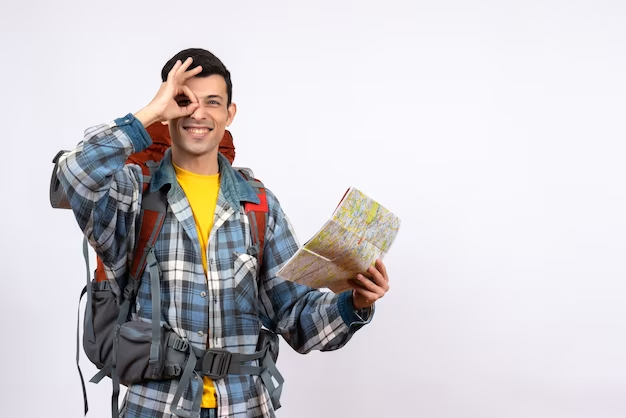

Carlos Zegarra
Trujillo, Peru
"Apasionado explorador y mochilero incansable, me embarco en aventuras por el mundo con tan solo una mochila a cuestas y un espíritu inquieto. Amante de la diversidad cultural, encuentro en cada rincón del planeta una oportunidad para aprender, crecer y sumergirme en experiencias auténticas.
Detalles Personales
Edad: 25
Idiomas: Español, Inglés
Ocupación: Viajero Profesional
Intereses
- Viajar
- Fotografía
- Aventuras al aire libre
- Gastronomía local